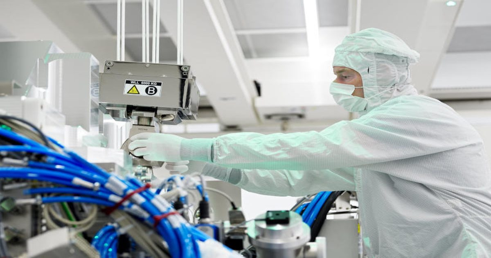

Китай запасся сотнями литографов ASML — их хватит для массового выпуска 7-нм ИИ-ускорителей на годы вперёд
Китайские производители чипов накопили сотни иммерсионных литографических установок ASML, работающих в глубоком ультрафиолете (DUV).
Хотя они уступают передовым EUV-системам, такое оборудование можно использовать для выпуска 7-нм логических чипов и памяти для ИИ-ускорителей.
Часть установок, приобретённых для зрелых техпроцессов, может быть перепрофилирована под более передовое производство — это поддерживает полупроводниковые амбиции Китая даже в условиях экспортных ограничений.
Источник изображений: asml.com